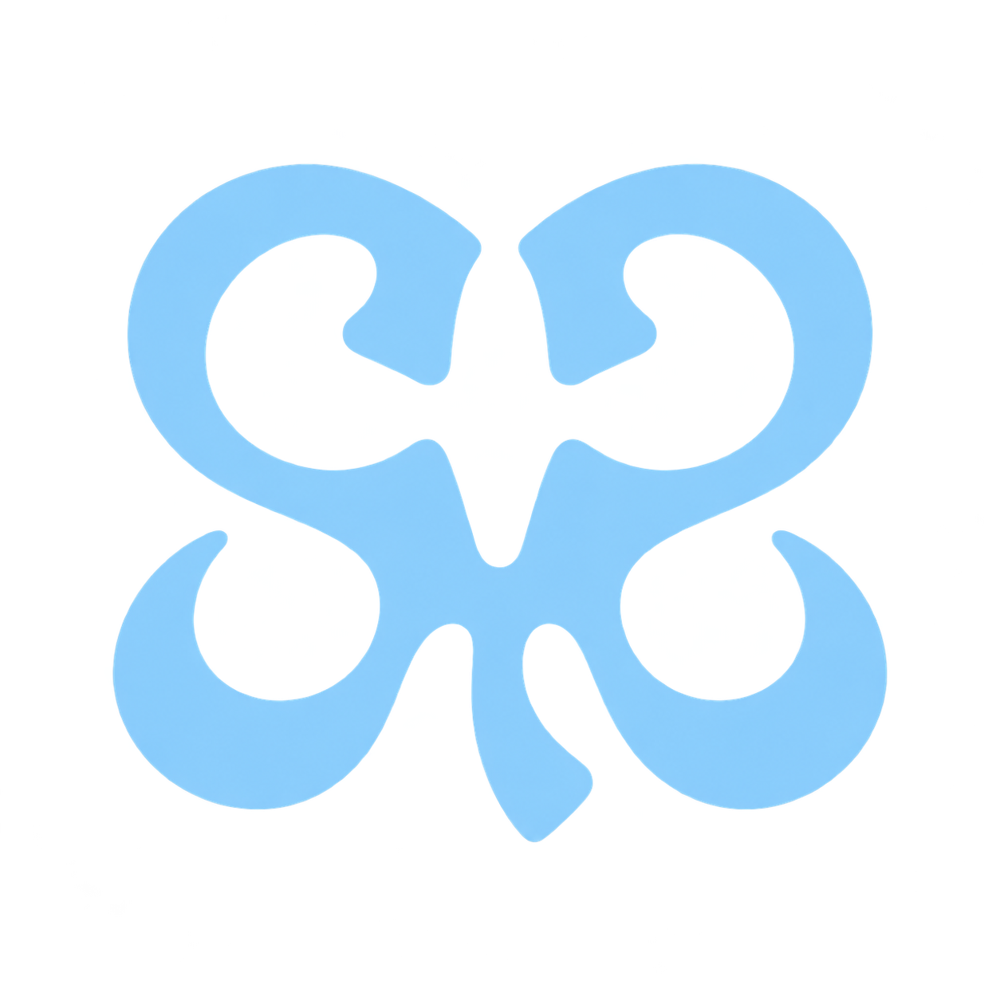
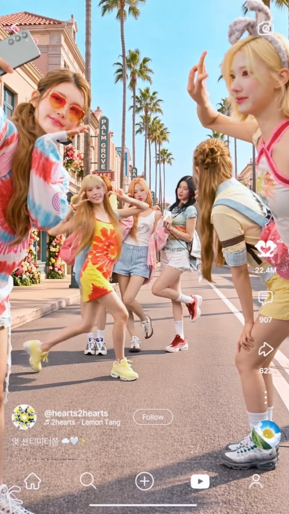

JAPAN DEBUT
ICONIC HEART
3 tracks · Agustus 2026
S2U FAN ARCHIVE · INDONESIA
Ruang kecil untuk mengikuti musik, member, dan setiap momen Hearts2Hearts.

Heartssentuh untuk memutar
JAPAN DEBUT
3 tracks · Agustus 2026
01 · THEIR WORLD

H2HHearts2Hearts menghubungkan penggemar melalui dunia musik yang misterius, beragam emosi, dan pesan yang datang dari hati.
Nama mereka menyimpan bentuk hati di tengahnya: HeartS2Hearts. Dari sanalah nama fandom S2U lahir, dengan penggemar selalu berada di pusat perjalanan mereka.
02 · MEET THE MEMBERS
Klik kartu untuk membuka profil dan fakta singkat.
03 · DISCOGRAPHY ROOM
04 · OUR LITTLE TIMELINE
Nama dan delapan member diperkenalkan kepada dunia.
Debut resmi dengan single album pertama.
Kemenangan acara musik pertama melalui The Show.
Mini album pertama dengan enam warna musik.
Meraih penghargaan pendatang baru di MAMA Awards.
Hearts2HOUSE hadir di Indonesia untuk S2U.
Musim panas terasa lebih manis bersama album kedua.
Langkah pertama Hearts2Hearts di Jepang.
05 · S2U PLAYGROUND
BIAS PICKER
S2U LOVE METER
2,025hati tersimpan di perangkat ini
RANDOM H2H
Carmen adalah member pertama SM Entertainment yang berasal dari Indonesia.